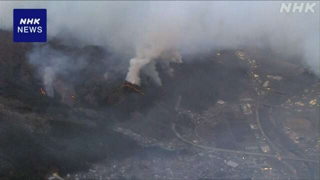
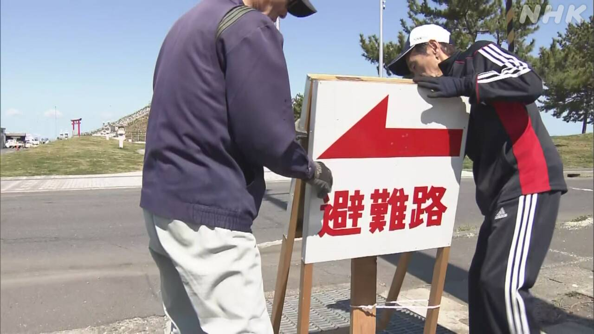
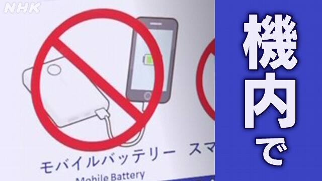

最新ニュース
1️⃣ 岩手県の山で1100ヘクタール以上が焼けた まだ消えていない

岩手県の山の火事のニュースです。
22日、大槌町の山で2つの場所から火が出ました。消防や自衛隊などが火を消そうとしていますが、まだ消えていません。
24日までに1100ヘクタール以上が焼けました。国によると、平成になってから、2番目に広い場所が焼けています。
大槌町は、人口の30％ぐらいの人に、安全な場所に避難するように言っています。
気象庁によると、大槌町など岩手県の太平洋側では、空気が乾いた日が続きそうです。
2️⃣ 地震や津波の心配がある場所に行く場合は「準備が必要」

東北地方の東の海で20日、大きい地震がありました。
青森県と岩手県、宮城県などで強く揺れて、津波も来ました。
地震のあと気象庁は、北海道から千葉県の市や町などに、「後発地震注意情報」を出しました。1週間ぐらい大きい地震に気をつけるように言っています。
この情報が出ている場所に行く予定がある場合、どうしたらいいか、専門家に聞きました。
専門家は、予定をやめる必要はありませんが、準備が大切だと言っています。かばんの中に食べ物や薬などを入れて、避難する場所を調べてから行くように言っています。
3️⃣ モバイルバッテリー 飛行機の中で使うことが禁止になった

リチウムイオン電池を使ったモバイルバッテリーから火が出る事故が続いています。
このため、国は、飛行機の中でモバイルバッテリーを使うことを禁止しました。24日から、飛行機の中で、モバイルバッテリーを使って、スマートフォンなどを充電することはできません。飛行機のコンセントで、モバイルバッテリーを充電することもできません。
東京の羽田空港では、モバイルバッテリーのルールを説明する案内を出していました。空港にいた人は「不便ですが、火事が起こっているので仕方がないと思います」と話していました。
4️⃣ オリンピックとパラリンピックの選手 25日に東京でパレード
ミラノ・コルティナオリンピックとパラリンピックの選手たちが、25日、東京でパレードをします。
110人ぐらいの選手が出ます。オリンピックのフィギュアスケートで、初めてペアの金メダルを取った、三浦璃来選手と木原龍一選手が出る予定です。パラリンピックのアルペンスキーで、銀メダルを2つ取った村岡桃佳選手も出る予定です。
木原龍一選手は「みなさんにメダルを見せて、ありがとうございますと、心から伝えたいです」と話していました。
- 〜から
- 〜など
- 〜や〜など
- 〜ている / 〜でいる
- 〜として
- 〜としている
- 〜まで
- 〜以上
- 〜までに
- 〜てから
- 〜になる
- 〜によると
- 〜ように
- 〜くらい / 〜ぐらい
- 〜そうだ
- 〜がある / 〜がいる
- 〜後 / 〜あと
- 〜予定
- 〜中
- 〜こと
- 〜ため
- 〜ので
- 〜と思う
- 〜予定だ
vebaev.github.io
Generated: 2026-04-24 11:58:54 UTC